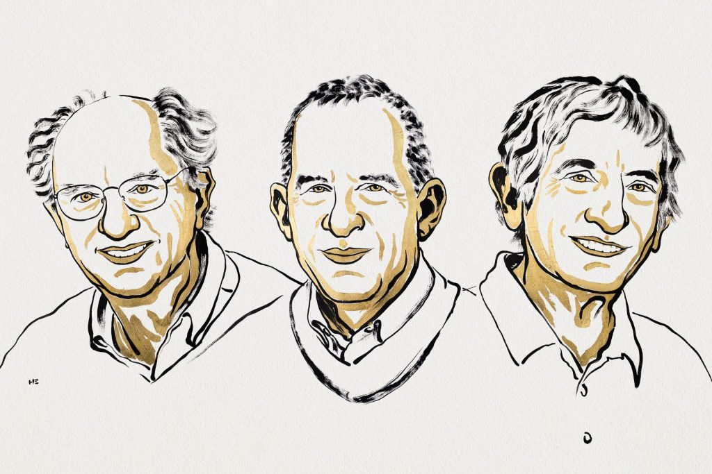
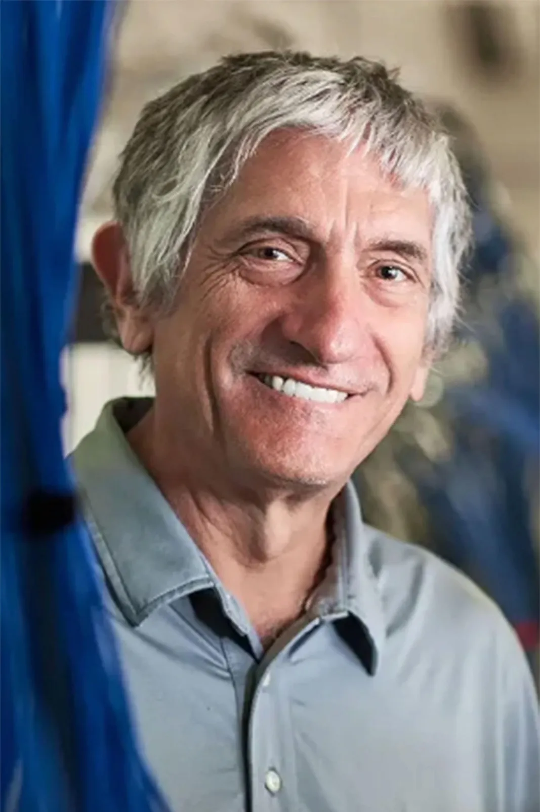

La Real Academia Sueca de Ciencias ha decidido otorgar el Premio Nobel de Física 2025 a John Clarke, Michel H. Devoret y John M. Martinis, los tres de la Universidad de California en Estados Unidos de América, por el descubrimiento del efecto túnel mecánico cuántico macroscópico y la cuantización de la energía en un circuito eléctrico.
La mecánica cuántica permite que una partícula atraviese una barrera mediante un proceso llamado tunelización. En cuanto intervienen grandes cantidades de partículas, los efectos de la mecánica cuántica suelen volverse insignificantes. Los experimentos de los galardonados demostraron que las propiedades de la mecánica cuántica pueden concretarse a escala macroscópica
Este sistema macroscópico, similar a una partícula, se encuentra inicialmente en un estado en el que la corriente fluye sin voltaje. El sistema está atrapado en este estado, como tras una barrera infranqueable. En el experimento, el sistema demuestra su carácter cuántico al lograr escapar del estado de voltaje cero mediante un efecto túnel. El cambio de estado del sistema se detecta mediante la aparición de un voltaje. Los galardonados también pudieron demostrar que el sistema se comporta tal como lo predice la mecánica cuántica: está cuantizado, lo que significa que sólo absorbe o emite cantidades específicas de energía.
Los transistores de los microchips informáticos son un ejemplo de la tecnología cuántica consolidada que nos rodea. Estos descubrimientos han brindado oportunidades para desarrollar la próxima generación de tecnología cuántica, incluyendo la criptografía cuántica, las computadoras cuánticas y los sensores cuánticos.

John Clarke

John Clarke, nacido en 1942 en Cambridge, Reino Unido, es un físico experimental y profesor emérito de la Universidad de California, Berkeley. Completó su licenciatura, maestría y doctorado en física en la Universidad de Cambridge antes de mudarse a Berkeley en 1969, donde desarrolló la mayor parte de su carrera. Es ampliamente reconocido por su trabajo en el desarrollo de dispositivos de interferencia cuántica superconductores (SQUIDs, por sus siglas en inglés), que son detectores ultrasensibles de flujo magnético. Su investigación ha sido fundamental para demostrar que los efectos cuánticos pueden ser aprovechados en dispositivos reales, lo que llevó a que algunos lo llamen el "padrino de la electrónica superconductora". En la década de 1980, lideró el equipo de investigación que, junto con Martinis y Devoret, realizó los experimentos que validaron la existencia del túnel cuántico macroscópico, un descubrimiento que le valió el reconocimiento del Nobel.
Michel H. Devoret

Michel H. Devoret, nacido en 1953 en París, Francia, es un físico francés y profesor de física aplicada en la Universidad de Yale, con una afiliación también en la Universidad de California, Santa Bárbara. Recibió su doctorado en física de la Universidad de París-Sur. Devoret es una figura clave en la intersección de la física fundamental y la ingeniería cuántica, conocido por sus invenciones que permiten el control y la medición precisos de estados cuánticos en circuitos eléctricos. Su trabajo ha sido esencial para superar el desafío de la decoherencia cuántica, que es la pérdida de propiedades cuánticas en sistemas más grandes. Al demostrar la coherencia cuántica en circuitos superconductores, su investigación ha proporcionado los métodos necesarios para la manipulación fiable de qubits, los bloques de construcción de los ordenadores cuánticos.
John M. Martinis
John M. Martinis, nacido en 1958 en Estados Unidos, es un físico experimental e investigador que ha desempeñado roles clave en la Universidad de California, Santa Bárbara, y previamente lideró el equipo de computación cuántica de Google. Martinis, quien fue estudiante doctoral de John Clarke, se ha centrado en la implementación práctica de la computación cuántica. Su contribución radica en la creación y perfeccionamiento de qubits superconductores, que son esenciales para construir procesadores cuánticos funcionales. El trabajo de Martinis y sus colaboradores no solo confirmó la teoría de que los fenómenos cuánticos podían existir a escala macroscópica, sino que también allanó el camino para la demostración de la "supremacía cuántica", donde un procesador cuántico realiza un cálculo que sería virtualmente imposible para un superordenador clásico. Su investigación ha sido fundamental para llevar la computación cuántica del ámbito teórico a la realidad experimental.